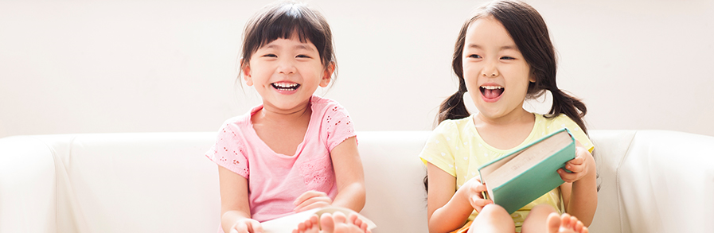

-
[황장군 컬럼] 우리 아이의 미래 ‘학원 vs. 경험’ 어디에 있을까요?
2017-06-12대한민국의 교육은 세계 최고입니다. 미국의 대통령도, PISA의 평가도, 중국과 동남아의 많은 국가들도 그렇게 말합니다. 교육기관도 최고, 부모들의 교육 열정도 최고, 교육시장 규모도 최고 입니다. 하지만, OECD 발표에 의하면 우리 청소년들의 행복지수는 최하위입니다. 학부모님들은 자녀의 미래에 대해 불안해 하고 있습니다. 교육기관들은 영세하고, 자생력이 없습니다. 가장 중요한 것은 우리 모두가 '잘하고 있는지'에 대한 확신이 없다는 것입니다. 강요하기 때문입니다. 부모도, 교육기관도, 국가도 자신감이 없이 말이죠. 이런 교육이 재미있을리 없습니다. 가장 많은 시간을 쓰는 교육이 이러하니 청소년들의 행복지수는 최하위인 것입니다. -
[황장군 컬럼] 공부보다 중요한, 내 아이를 성공시키는 7가지 팁
2017-06-12 열심히 학원을 가는 이유, 학교 내신을 관리를 위해 최선을 다하는 이유, 다양한 체험활동과 경험을 제공하는 이유, 많은 책을 읽도록 하는 이유, 여행을 통해 많은 문화 경험을 하는 이유….
아이들이 힘들어 하는 줄 알면서도 부모가 모르는 척하며, ‘다, 너를 위해서야…’라고 하는 이유는 바로 ‘아이들의 성공’을 위해서라고 부모들은 하나 같이 이야기 한다. ‘성공’을 사전적 의미로 풀이하면, ‘목적하는 바를 이루다’ 쯤으로 해석이 된다. 여기에서 말하는 부모들이 ‘목적하는 바’는 바로 아이들의 보다 풍요로운, 행복한 삶일 것이다. 우리 아이 인생의 성공을 위해서 어린 시절 부모들이 반드시 해주어야하는 것들에는 무엇이 있을까 알아 보자.
강요하기 때문입니다. 부모도, 교육기관도, 국가도 자신감이 없이 말이죠. 이런 교육이 재미있을리 없습니다. 가장 많은 시간을 쓰는 교육이 이러하니 청소년들의 행복지수는 최하위인 것입니다. -
[황장군 컬럼]2016년 구정연휴 고객센터 운영안내
2017-06-12대한민국의 교육은 세계 최고입니다. 미국의 대통령도, PISA의 평가도, 중국과 동남아의 많은 국가들도 그렇게 말합니다. 교육기관도 최고, 부모들의 교육 열정도 최고, 교육시장 규모도 최고 입니다. 하지만, OECD 발표에 의하면 우리 청소년들의 행복지수는 최하위입니다. 학부모님들은 자녀의 미래에 대해 불안해 하고 있습니다. 교육기관들은 영세하고, 자생력이 없습니다. 가장 중요한 것은 우리 모두가 '잘하고 있는지'에 대한 확신이 없다는 것입니다. 강요하기 때문입니다. 부모도, 교육기관도, 국가도 자신감이 없이 말이죠. 이런 교육이 재미있을리 없습니다. 가장 많은 시간을 쓰는 교육이 이러하니 청소년들의 행복지수는 최하위인 것입니다. -
2017년 3월 21일 체험험교육 플랫폼 아자스쿨이 드디어 오픈되었습니다.
2017-06-12대한민국의 교육은 세계 최고입니다. 미국의 대통령도, PISA의 평가도, 중국과 동남아의 많은 국가들도 그렇게 말합니다. 교육기관도 최고, 부모들의 교육 열정도 최고, 교육시장 규모도 최고 입니다. 하지만, OECD 발표에 의하면 우리 청소년들의 행복지수는 최하위입니다. 학부모님들은 자녀의 미래에 대해 불안해 하고 있습니다. 교육기관들은 영세하고, 자생력이 없습니다. 가장 중요한 것은 우리 모두가 '잘하고 있는지'에 대한 확신이 없다는 것입니다. 강요하기 때문입니다. 부모도, 교육기관도, 국가도 자신감이 없이 말이죠. 이런 교육이 재미있을리 없습니다. 가장 많은 시간을 쓰는 교육이 이러하니 청소년들의 행복지수는 최하위인 것입니다. -
새롭게 달라진 아자스쿨을 소개합니다. 새롭게 달라진 아자스쿨을 소개합니다.
2017-06-12대한민국의 교육은 세계 최고입니다. 미국의 대통령도, PISA의 평가도, 중국과 동남아의 많은 국가들도 그렇게 말합니다. 교육기관도 최고, 부모들의 교육 열정도 최고, 교육시장 규모도 최고 입니다. 하지만, OECD 발표에 의하면 우리 청소년들의 행복지수는 최하위입니다. 학부모님들은 자녀의 미래에 대해 불안해 하고 있습니다. 교육기관들은 영세하고, 자생력이 없습니다. 가장 중요한 것은 우리 모두가 '잘하고 있는지'에 대한 확신이 없다는 것입니다. 강요하기 때문입니다. 부모도, 교육기관도, 국가도 자신감이 없이 말이죠. 이런 교육이 재미있을리 없습니다. 가장 많은 시간을 쓰는 교육이 이러하니 청소년들의 행복지수는 최하위인 것입니다.